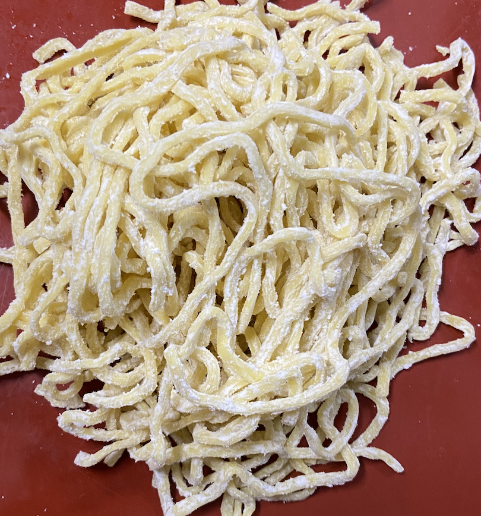
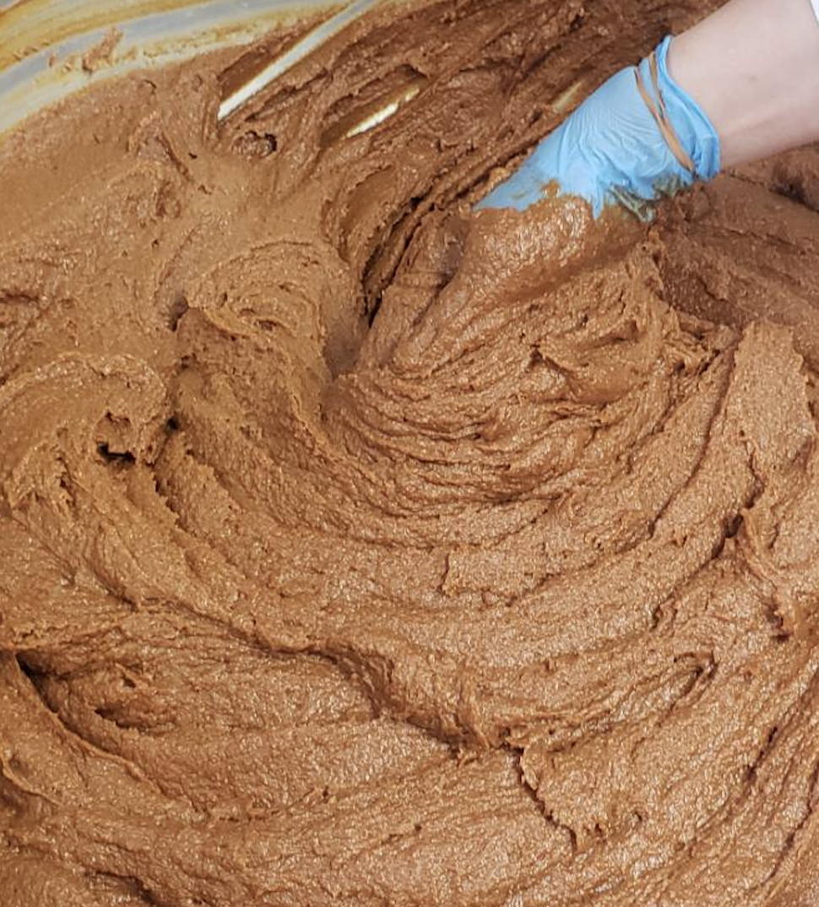
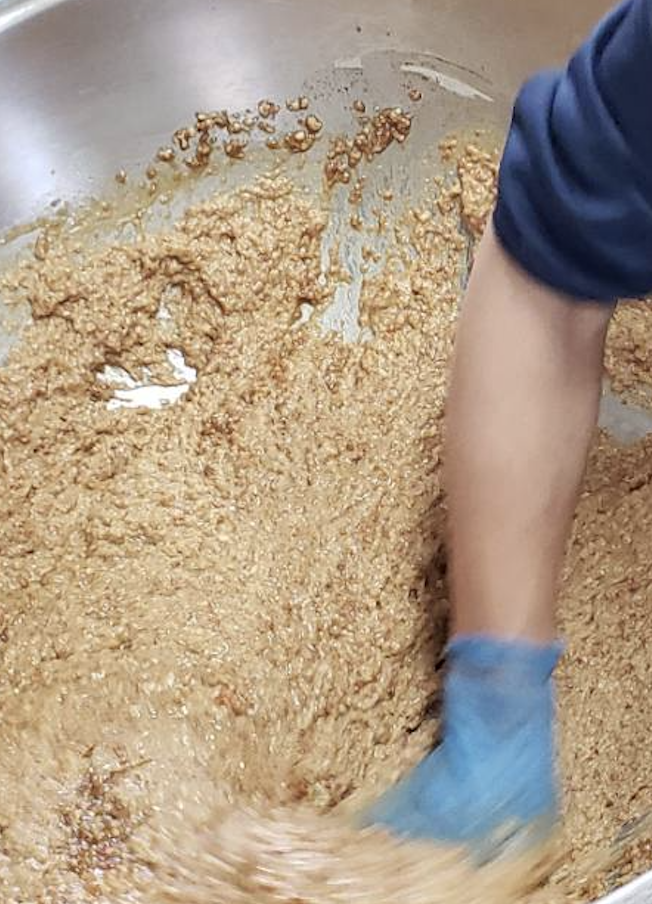
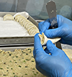
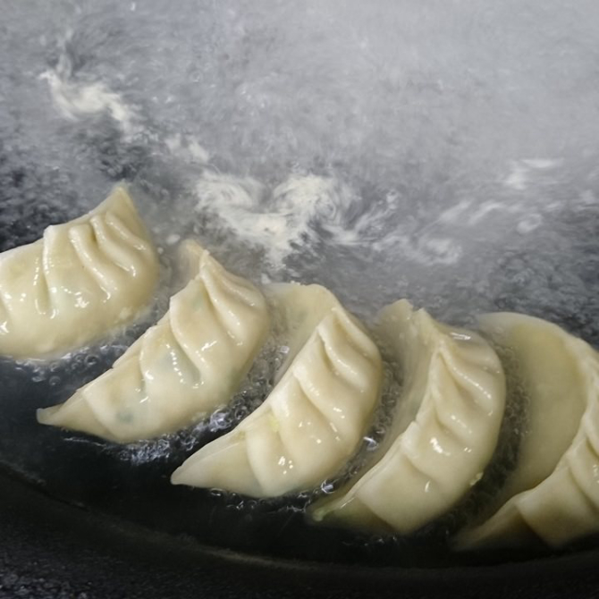
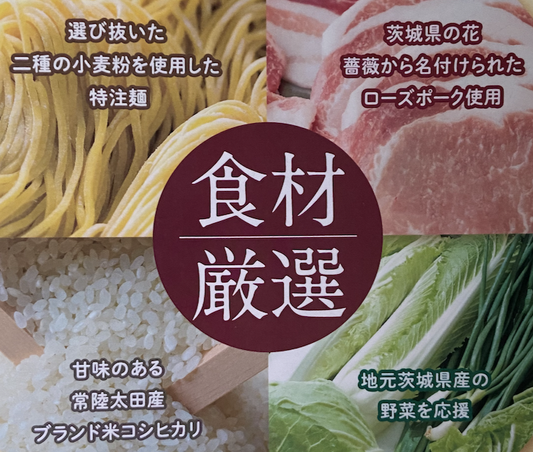

こだわり
美味しい商品は素材から
麺
2種類の小麦粉を独自の配合でブレンドしています。モチモチな麺にスープが絡むことで、麺の旨さが更に際立ちます！
スープ

鶏ガラ、だし、野菜を半日煮込むことで、さっぱりとしたスープに仕上げました。
味噌
本場北海道の厳選された味噌を使用！野菜や高級醤油とともに熟成させることで、繊細ながらも深みのある味を出しています。
自慢の一品 手作り餃子
餃子の餡から手作りしています
当店では、餃子の具材から手作り。ひき肉を粘り気が出るまで練ることで、食感の良い餃子になります。
全ての餃子を手で握っています
機械を使わず一つ一つ丁寧に握る。このこだわりは他の店舗には負けませんし、このこだわりこそがお客様から絶大な支持を得ている秘訣です。
モチモチでジューシな餃子
餃子を一口運べば、皮のモチモチと具材のジューシー・旨さが口一杯にに広がること間違いなしです。
厳選された食材
お客様に安心して食事をしていただくには、食材を厳選することが必要不可欠です。そのため、当店では豚肉・米・野菜全てにおいて国産のものを使用しています。また、手作りにこだわることで美味しい商品をお客様に提供させていただいています。
豚肉はローズポークを使用しており、茨城県の県花「バラ」にちなんで名付けられた銘柄豚です。弾力があり、きめが細かく、柔らかい肉質が特徴です。
米は地元ブランド米常陸太田産のコシヒカリを使用しています。粘り・柔らかさ・香り・甘味のバランスが良いことが特徴です。
